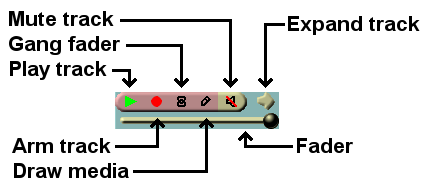

7 Editing
Editing comprises both the time domain and the track domain. Since the
timeline consists of a stack of tracks, you need to worry about how to create and
sort tracks in addition to what time certain media appears on a track.
In the time domain, Cinelerra offers many ways to approach the editing process.
The three main methods are two screen editing, drag and drop editing, and cut
and paste editing.
There are several concepts Cinelerra uses when editing which apply to all the
methods.
The timeline is where all editing decisions are represented.
This is a stack of tracks in the center of the main window. It can be scrolled
up, down, left and right with the scrollbars on the right and bottom of it. It
can also be scrolled up and down with a mouse wheel, left and right with a mouse
wheel and the <CTRL> key.
The active region is the range of time which is affected by editing
commands on the timeline. The active region is determined first by the
presence of in/out points in the timeline. If those do not exist the
highlighted region is used. If no highlighted region exists the insertion
point is used as the start of the active region. Some commands treat all the
space to the right of the insertion point as active while others treat the active
length as 0 if no end point for the active region is defined.
Finally, editing decisions never affect source material. This is non
destructive editing and it became popular with audio because it was much
faster than if you had to copy all the media affected by an edit. Editing only
affects pointers to source material, so if you want to have a media file at the
end of your editing session which represents the editing decisions, you need to
render it. See section Rendering files. See section Saving project files.
See section Editing Media shortcuts, for information about the editing controls
keyboard shortcuts.
7.1 The patchbay
On the left of the timeline is a region affectionately known as the patchbay.
The patchbay enables features specific to each track.
All tracks have a text area for naming the track.
All tracks have an expander  for
viewing more options on the patchbay and for viewing the effects represented on the track.
Click on the expander to expand or collapse the patchbay and the track. If it is
pointing sideways, the track is collapsed. If it is pointing down, the track is expanded.
Existing effects appear below the media for the track.
for
viewing more options on the patchbay and for viewing the effects represented on the track.
Click on the expander to expand or collapse the patchbay and the track. If it is
pointing sideways, the track is collapsed. If it is pointing down, the track is expanded.
Existing effects appear below the media for the track.
All tracks have the following row of toggles for several features.

Track attributes
If the toggle is colored, the feature is enabled. If the toggle is the background color
of most of the windows, it is disabled. Click on the toggle to enable or
disable the feature. Several mouse operations speed up the configuration of
several tracks at a time.
Click on an attribute and drag the cursor across adjacent tracks to copy the same
attribute to those tracks.
Hold down <SHIFT> while clicking a track’s attribute to enable the
attribute in the current track and toggle the attribute in all the other
tracks.
Hold down <SHIFT> while clicking an attribute. Click until all the tracks
except the selected one are disabled. Then drag the cursor over the adjacent
track to enable the attribute in the adjacent track.
The attributes affect the output of the track:
- Play track
Determines whether the track is rendered or not. If it is off,
the track is not rendered. For example if you turn it off in all the video
tracks, the rendered media file will have only audio tracks. However, if the track
is chained to any other tracks by a shared track effect, the other tracks perform all the effects
in this shared track, regardless of play status of the shared track that in this
particular case affects the media output but not fade and effects. See section Realtime effect types.
- Arm track
Determines whether the track is armed or not. Only the armed tracks are affected
by editing operations. Make sure you have enough armed destination tracks when
you paste or splice material or some tracks in the material will get left out.
In addition to restricting editing operations, the armed tracks in combination
with the active region determine where material is inserted when loading files.
If the files are loaded with one of the insertion strategies which do not delete
the existing project, the armed tracks will be used as destination tracks.
Press <TAB> while the cursor is anywhere over a track to toggle the track
arming status.
Press SHIFT-TAB while the cursor is over a track to toggle the arming
status of every other track.
- Gang fader
Causes the fader to track the movement of whatever other fader
you are adjusting by dragging either the fader or the curve on the track.
It doesn’t affect the editing made with menu controls. A fader is only ganged
if the arm track is also on.
This is normally used to adjust audio levels on all the tracks simultaneously.
Gang also causes Nudge parameters to synchronize across all the ganged tracks.
- Draw media
Determines if picons or waveforms are drawn on the asset in the track. By
default, some file formats load with this off while other file formats load
with it on. This depends on whether the file format takes a long time to draw
on the timeline. Merely set it to on if you want to see picons for any file
format.
- Mute track
Causes the output to be thrown away once the track is completely
rendered. This happens whether or not play track is on. For example if you
mute all the video tracks, the rendered media file will have a blank video
track.
Mute track is represented on the timeline with a blue line. Go to View ->
Mute to make it show. It is a keyframable attribute, but Mute track keyframing
is a toggle and it has, unlike curves, only two values: on or off.
If a track is part of a shared track effect, the output of the track with the
shared track effect is overlaid on the final output even though it is routed back
to another track (the shared track).
Mute track is used to keep the track with the shared track effect from overlapping
the output of the source track (the shared track) where the shared track effect
is not present. See section Realtime effect types.
- Fader
Fade values are represented on the timeline with a white curve that is keyframable.
All tracks have a fader, but the units of each fader depend on whether it is
audio or video.
Audio fade values are in dB. They represent relative levels, where 0 is
the unaltered original sound level, -40 is silence, -80 the minimum value set by
default. You can move fader and keyframes down to -80 but the parameter’s curve won’t go
below -40. For your convenience you can set a different fade range with the
curve zoom. See section The zoom panel. Audio faders’ main purpose is to "fade out" sound
or to lower the sound level smoothly to silence, or "fade in" to make sounds appear
gradually instead of suddenly.
Video fade values are the percentage of opacity
of the image in normal overlay mode, the percentage of the layer that
is mixed into the render pipeline in the other overlay modes. See section Overlay modes.
Click and drag the fader to fade the track in and out. If it
is ganged to other tracks of the same media type, with the arm option
enabled, the other faders should follow. Hold down <SHIFT> and drag a
fader to center it on the original source value (0 for audio, 100 for video).
7.2 Nudging tracks
Each track has a nudge textbox in its patchbay. You may have to expand the
track to see it. These are views of the patchbays when expanded.

Pan and nudge for an audio track

Overlay mode and nudge for a video track
The nudge value is the amount the track is shifted left or right during playback.
The track is not displayed shifted on the timeline, but it is shifted when it
is played back. This is useful for synchronizing audio with video, creating
fake stereo, or compensating for an effect which shifts time, all without
tampering with any edits.
Merely enter the amount of time to shift to instantly shift the track.
Negative numbers make the track play later. Positive numbers make the track
play sooner. The nudge units are either seconds or the native units for
the track (frames or samples). Select the units by right clicking
on the nudge textbox and using the context sensitive menu.
Nudge settings are ganged with the Gang faders toggle and the Arm track
toggle.
Use the mouse wheel over the nudge textbox to increment and decrement it.
7.3 Panning audio tracks
Audio tracks have a panning box in their patchbays. A patchbay may have to be expanded
to see the panning box. The panning box is shown here.
Pan and nudge for an audio track
Position the pointer in the panning box and click/drag to reposition the audio
output among the speaker arrangement. The loudness of each speaker is printed
on the relative icon during the dragging operation.
The panning box uses a special algorithm to try to allow audio to be focused
through one speaker or branched between the nearest speakers when more than 2
speakers are used.
7.4 Automatic audio track panning
Several convenience functions are provided for automatically setting the
panning to several common standards. They are listed in the Audio menu.
These functions only affect armed audio tracks. They are:
- Audio->Map 1:1
This maps every track to its own channel and wraps around when all the
channels are allocated. It is most useful for making 2 tracks with 2 channels
map to stereo and for making 6 tracks with 6 channels map to a 6 channel
soundcard.
- Audio->Map 5.1:2
This maps 6 tracks to 2 channels. The project should have 2 channels when
using this function. Go to Settings->format to set the output channels to
2. This is most useful for down-mixing 5.1 audio to stereo.
See section Audio attributes.
7.5 Standard audio mappings
Although Cinelerra lets you map any audio track to any speaker, there are
standard mappings you should use to ensure the media can be played back
elsewhere. Also, most audio encoders require the audio tracks to be mapped to
standard speaker numbers or they will not work.
In the channel position widget See section Audio attributes, the
channels are numbered to correspond to the output tracks they are rendered to.
For stereo, the source of channel 1 needs to be the left track and the source
of channel 2 needs to be the right track.
For 5.1 surround sound, the sources of the 6 channels need to be in the order
of center, front left, front right, back left, back right, low frequency
effects. If the right tracks are not mapped to the right speakers, most audio
encoders will not encode the right information if they encode anything at all.
The low frequency effects track specifically can not store high frequencies in
most cases.
7.6 Manipulating tracks
Tracks in Cinelerra either contain audio or video. There is no special
designation for tracks other than the type of media they contain. When you
create a new project, it contains three default tracks: one video track
and two audio tracks. You can still add and delete tracks from the menus.
The Tracks menu contains a number of options for dealing with multiple tracks
simultaneously. Each track itself has a popup menu which affects one track.
See section The track popup menu.
Operations in the Tracks menu affect only tracks which are armed.
- Move tracks up and Move tracks down shift all the armed tracks up
or down the stack.
- Delete tracks deletes the armed tracks.
- Delete last track deletes the last track, whether it is armed or not.
Holding down the <d> key quickly deletes all the tracks.
- Concatenate tracks is more complicated. This operation copies all the
assets of every disarmed but playable track and concatenates it by pasting those
assets at the end of the first set of armed tracks. They are pasted one after the
other, keeping the same order they have on the stack. If there are two armed tracks
followed by two disarmed tracks, the concatenate operation copies the assets of the
two disarmed tracks and pastes them after the assets of the two armed tracks. If
there are three disarmed tracks instead, the assets of two tracks are pasted after
the assets of the armed tracks and the assets of the third track are pasted at the
end of the first armed track. The destination track wraps around until all the
disarmed tracks are concatenated. Disarmed tracks that are not playable are not
concatenated.
Finally, you will want to create new tracks. The Audio and Video menus
each contain an option to add a track of their specific type. In the case of
audio, the new track is put on the bottom of the timeline and the output
channel of the audio track is incremented by one. In the case of video, the
new track is put on the top of the timeline. This way, video has a natural
compositing order. New video tracks are overlaid on top of old tracks.
7.7 Two screen editing
This is the fastest way to construct a program out of movie files. The idea
consists of viewing a movie file in one window and viewing the program in
another window. Subsections of the movie file are defined in the viewer window and
transferred to the end of the program in the program window.
The way to begin a two screen editing session is to load some resources. In
File->Load files... load some movies with the insertion mode Create new
resources only. You want the timeline to stay unchanged while new resources are
brought in. Go to the Resource Window and select the Media folder. The
newly loaded resources should appear. Double click on a resource or drag it
from the media side of the window over the Viewer window.
There should be enough armed tracks on the timeline to put the subsections of
source material that you want (usually one video track and two audio tracks).
If there are not, create new tracks or arm more tracks.
In the viewer window, define a clip out of your movie file:
- Set the starting point with the
 in point button.
in point button.
- Seek to the ending point of the clip you want to use.
- Set the ending point with the
 out point button.
out point button.
The two points should now appear on the timebar and define a clip.
There are several things you can do with the clip now:
- Splice
 Inserts the selected area in the
timeline after the insertion point.
Inserts the selected area in the
timeline after the insertion point.
After the splice has taken effect, the insertion point moves to the end of the
edit ready to be used as the next splice location. This way you can
continuously build up the program by splicing.
If an in point or an out point exists on the timeline the clip is inserted
after the in point or after the out point.
If both in and out points are set on the timeline, the clip is inserted after
the in point.
If there are edits after your chosen splice location on the timeline, they will
be pushed to the right.
- Overwrite
 Overwrites the region of the
timeline after the insertion point with the clip.
Overwrites the region of the
timeline after the insertion point with the clip.
If an in point or an out point exists on the timeline the clip is
overwritten after the in point or after the out point.
If both in and out points are set on the timeline, the clip is inserted after
the in point.
If a region is highlighted or both in and out points exist they limit the region of
the overwriting and the clip may therefore be shortened. This is so clever
that it is worth the following detailed description.
TIP: To overwrite exactly on a precise region of the timeline:
- Arm only tracks to change.
- Define the destination region on the timeline with [ and ].
- Define the clip you want to use in the viewer with [ and ].
- Overwrite from Viewer to the timeline.
If the destination region is shorter than the clip defined in the viewer, the portion
of the clip longer than the destination region won’t be inserted.
On the timeline the following edits won’t move.
Beware: If the destination region is longer than the clip defined in the
viewer, the destination region will shrink. On the timeline the following edits
will move to the left.
- Create a clip
 Generates a new clip for the resource window
containing the affected region but does not change the timeline. Every clip
has a title and a description. These are optional.
Generates a new clip for the resource window
containing the affected region but does not change the timeline. Every clip
has a title and a description. These are optional.
- Copy
See section Cut and paste editing, it behaves the same.
Two screen editing can be done purely by keyboard shortcuts. When you move the
mouse pointer over any button a tooltip should appear, showing what key is bound to
that button. In the Viewer window, the number pad keys control the transport
and the <[> <]> <v> keys perform in/out points and splicing.
7.8 Drag and drop editing
Drag and drop editing is a quick and simple way of working in Cinelerra,
using only the mouse. The basic idea is to create a bunch of clips, then drag
them in order into the timeline building a prototype film that you can watch on
the compositor. If after watching it, you wish to re-arrange your clips, set
effects, add transition or insert/delete material, just drag and drop them on
the timeline.
- Load some files using File->Load files....
- Set the insertion mode to Create new resources only. This loads the files
into the Resource Window.
- Create some video and audio tracks on the timeline using the Video and
Audio menus.
- Open the Media folder in the resource window.
- Make sure the necessary tracks are armed and drag a media file from the
resource window to the timeline. If the media has video, drag it onto a video
track. If the media is pure audio, drag it onto an audio track. If the media is
a still image, drag it onto a video track.

Cinelerra fills out the audio and video tracks below the dragging cursor with
data from the file. This affects what tracks you should create initially and
which track to drag the media onto.
To drag and drop a file on the Program window, you need to create on the timeline
the same set of tracks of your media file.
A common camcorder file has a set of one video track and two audio tracks. In
this case you will need one video track and two audio tracks and the media should
be dragged over the first video track.
If the media has audio only you will need one audio track on the timeline for every
audio track in the media and the media should be dragged over the first audio
track.
If the media is a still image, you will need a video track only.
When you drag your chosen media from the media folder to the timeline, your
mouse pointer will drag a thumbnail and, once over the timeline, the outline
of a white rectangle, as big as the edit you are going to have.
Drag the media to the desired position of an empty track of the timeline and drop
it.
If there are other edits on that track, when you move the white outline over an
edit, you will see a bow tie symbol >< appearing at edit boundaries. If you drop
the media there, the new edit will start from the edit boundary indicated by the
center of the bow tie ><.
Since the mouse pointer is in the middle of the white outline, when this rectangle
is bigger than the visible part of the timeline, it is quite cumbersome to precisely
insert it. (This will likely happen for long media).
Lengthening the duration visible in the timeline by changing the sample zoom in
the zoom panel will reduce the size of the white rectangle, making a precise
insertion possible.
You can also drag multiple files from the resource window. When dropped in the
timeline they are concatenated.
The way of selecting multiple files to drag changes depending on if the resources
are displayed as text or as icons. To change the display mode right click inside
the media list and select either Display icons or Display text.
When displaying text in the resource window <CTRL-clicking> on media files
selects additional files one at a time; <SHIFT-clicking> on media files extends
the number of highlighted selections.
When displaying icons in the resource window <SHIFT-clicking> or
<CTRL-clicking> selects media files one at a time; drawing a box around the
files selects contiguous files.
In addition to dragging media files, if you create clips and open the clip
folder you can drag clips on the timeline.
In the timeline there is further dragging functionality. Dragging edits around
the timeline allows you to sort music playlists, sort movie scenes, and give
better NAB demos but not much else. To enable the dragging functionality of
the timeline, select the arrow toggle  on
the control bar.
on
the control bar.
Arm a track with various scenes.

Original track with three scenes.
Go to scene #3, click and drag it to the middle.

When you drop scene #3

scene #2 shifts to the right

This is how the finished sequence looks.
If more than one track is armed, Cinelerra will drag any edits which start on
the same position as the edit the mouse pointer is currently over. In other words,
you can drag and drop a group of edits. Cinelerra recognises as a group the
edits of different armed tracks that have aligned beginnings, regardless of
whether they have the same source or aligned ends.
When you drag and drop edits within the timeline:
If you drop an edit when bow ties >< are shown, that edit will be cut and pasted
starting at the edit boundary indicated by the centre of the bow tie ><.
Following edits on the same track will move.
If you drop an edit when there are no bow ties >< shown, the original edit will
be muted and pasted where you dropped it. No edits will move. A silence will
appear in place of the original edit.
If you have more armed tracks on the timeline than in the asset you are
dragging, only the following edits of the tracks affected by the drag and drop
operation will move to the right. This will cause loss of synchronization. To
restore it, disarm the tracks affected by the drag and drop operation, highlight the just dropped edit and
paste silence over it (Edit -> Paste Silence).
In Drag and Drop editing mode you can’t drag and drop labels. They will be
always locked to the timebar, even with the Edit labels option enabled.
Still, with the Edit labels option enabled, if a selected area of a resource
is spliced from the Viewer to the timeline in a position before labels, these
labels will be pushed to the right for the length of the selected area.
With in/out points you can perform Cut and Paste operations in Drag and Drop
mode as well as in Cut and Paste mode. Go to the Edit Menu to view the list
and the keyboard shortcuts.
7.9 Cut and paste editing
This is the traditional method of editing in audio editors.
In the case of Cinelerra, you can copy edits in the same track, copy from different
tracks in the same instance, start a second instance of Cinelerra and copy from
one instance to the other or load a media file into the Viewer and copy from there.
Load some files onto the timeline. To perform cut and paste editing select the
 i-beam toggle. Select a region of the
timeline by click dragging on it and select the
i-beam toggle. Select a region of the
timeline by click dragging on it and select the  cut button to cut it. Move the insertion point to another point in the timeline
and select the
cut button to cut it. Move the insertion point to another point in the timeline
and select the  paste button.
Assuming no in/out points are defined on the timeline this performs a cut and
paste operation.
paste button.
Assuming no in/out points are defined on the timeline this performs a cut and
paste operation.
If in/out points are defined, the insertion point and highlighted region are
overridden by the in/out points for clipboard operations. Thus, with in/out
points you can perform cut and paste in drag and drop mode as well as cut and
paste mode.
Most editing operations are listed in the Edit Menu. Some of them have a button
on the program control toolbar and a keyboard shortcut.
- Cut x - Delete the selected area and hold it on the clipboard for future
pasting.
- Copy c - Copy the selected area and hold it on the clipboard for future
pasting.
- Paste v - Paste the material held in the clipboard
- Clear Del - Clear the selected area. If the insertion point is over an edit
boundary and the edits on each side of the edit boundary are the same resource, the
edits are combined into one edit comprised by the resource. The start of this one
edit is the start of the first edit and the end of this one edit is the end of the
second edit. This either results in the edit expanding or shrinking.
- Paste Silence Shift+Space - Paste blank audio/video for the length of the selected
area. Following edits will be pushed to the right.
- Mute Region m - Overwrite blank audio/video on the selected area. Following
edits don’t move.
- Trim Selection - Delete everything but the selected region
- Select All a - Select the whole timeline
Other editing operations:
- Copy&Mute cm - Mute the selected area and hold it on the clipboard for future
pasting.
- Overwrite - To perform overwriting within the timeline paste on a selected
region (highlighted or between in/out points). The selected region will be overwritten.
If the clip pasted from the clipboard is shorter than the selected region, the selected
region will be shrunk. Following edits will move. If the clip pasted from the clipboard
is longer than the selected region, the selected region will be overwritten with
the first part of the clip and the remaining part of the clip will be written after
the overwriting. Following edits will move. Alternatively, overwrite from the Viewer.
See section Two screen editing.
- Concatenate - Go to Tracks -> Concatenate tracks. This operation
copies all the assets of every disarmed but playable track and concatenates it by
pasting those assets at the end of the first set of armed tracks. They are pasted
one after the other, keeping the same order they have on the stack. See section Manipulating tracks.
- Split - Cinelerra can’t spit an edit in two. To insert a transition in the
middle of an edit delete a single frame. To insert a clip in the middle of an edit
splice from the Viewer. See section Two screen editing.
In Cut and Paste editing mode you can edit labels as well. By enabling Edit
labels in the Settings Menu, or by disabling the Lock labels from moving
button on the Program Control Tool Bar labels will be cut, copied or pasted
along with the selected regions of the armed tracks.
When editing audio, it is customary to cut from one part of a waveform into the
same part of another waveform. The start and stop points of the cut are
identical in each waveform and might be offset slightly, while the wave data is
different. It would be very hard to highlight one waveform to cut it and
highlight the second waveform to paste it without changing the relative start
and stop positions.
One option for simplifying this is to open a second copy of Cinelerra, cutting
and pasting to transport media between the two copies. This way two
highlighted regions can exist simultaneously.
Another option is to set in/out points for the source region of the source
waveform and set labels for the destination region of the destination waveform.
Perform a cut, clear the in/out points, select the region between the labels,
and perform a paste.
7.10 Trimming
With some edits on the timeline it is possible to do trimming. By trimming you
shrink or grow the edit boundaries by dragging them. In drag and drop mode or
cut and paste mode, move the cursor over an edit boundary until it changes
shape. The cursor will either be an expand left or an expand right. If the
cursor is an expand left, the dragging operation affects the beginning of the
edit. If the cursor is an expand right, the dragging operation affects the end
of the edit.
When you click on an edit boundary to start dragging, the mouse button number
determines which dragging behavior is going to be followed. 3 possible
behaviors are bound to mouse buttons in the interface preferences.
See section Interface.
The effect of each drag operation not only depends on the behavior button but
whether the beginning or end of the edit is being dragged. When you release
the mouse button, the trimming operation is performed.
In a Drag all following edits operation, the beginning of the edit either
cuts data from the edit if you move it forward or pastes new data from before
the edit if you move it backward. The end of the edit pastes data into the
edit if you move it forward or cuts data from the end of the edit if you move
it backward. All the edits thereafter shift. Finally, if you drag the end of
the edit past the start of the edit, the edit is deleted.
In a Drag only one edit operation, the behavior is the same when you drag
the beginning or end of an edit. The only difference is none of the other
edits in the track shift. Instead, anything adjacent to the current edit
expands or shrinks to fill gaps left by the drag operation.
In a Drag source only operation, nothing is cut or pasted. If you move the
beginning or end of the edit forward, the source reference in the edit shifts
forward. If you move the beginning or end of the edit backward, the source
reference shifts backward. The edit remains in the same spot in the timeline
but the source shifts.
For all file formats besides still images, the extent of the trimming operation
is clamped to the source file length. Attempting to drag the start of the edit
beyond the start of the source clamps it to the source start.
In all trimming operations, all edits which start on the same position as the
cursor when the drag operation begins are affected. Unarm tracks to prevent
edits from being affected.
Most effects in Cinelerra can be figured out just by using them and tweaking.
Here are brief descriptions of effects which you might not utilize fully by
mere experimentation.
This document was generated on May 12, 2015 using texi2html 5.0.